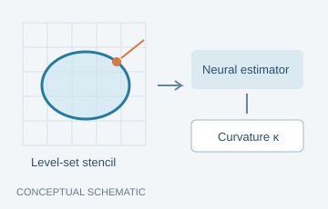
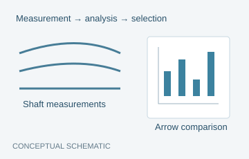
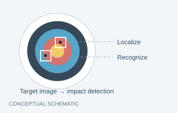

Neural Curvature Estimation for Two-Phase Flow Simulations
Neural interface-curvature estimation for multiphase flow, connecting learned local geometry with numerical simulation in Basilisk.
I am an Applied Mathematics undergraduate interested in AI for Science and scientific machine learning. My research focuses on neural methods for multiphase flow simulation, alongside projects in computer vision, sports analytics, and AI-assisted education.

Neural interface-curvature estimation for multiphase flow, connecting learned local geometry with numerical simulation in Basilisk.

High-speed motion analysis and physical measurements for data-driven selection of competition-grade arrows. Research at BNBU’s digital sports research center, 2025–2026.
Journal website ↗ · BNBU project overview ↗

A vision pipeline for detecting arrow impacts and recognizing ring scores under practical shooting conditions.

A teaching-support system that turns course materials into editable lessons, assessments, and presentations through retrieval-augmented generation.